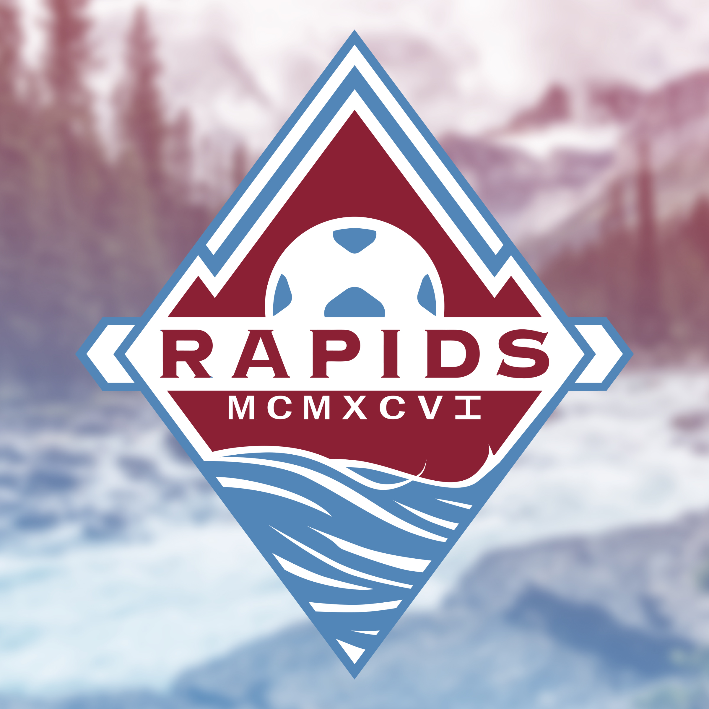
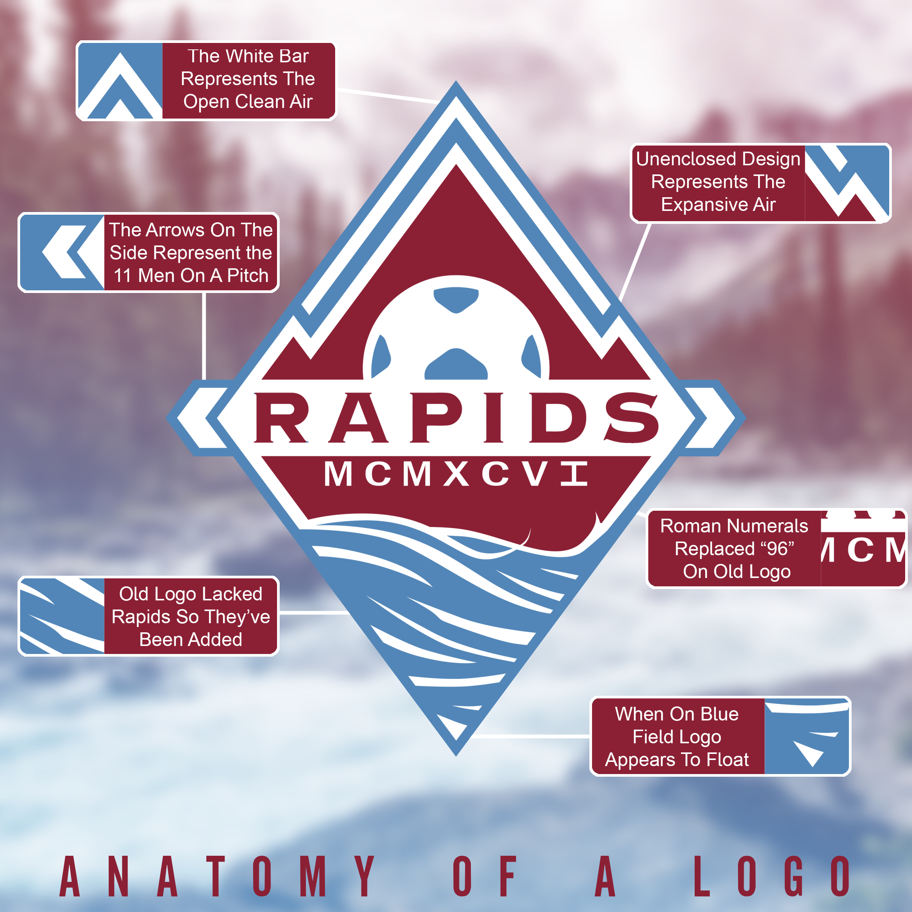
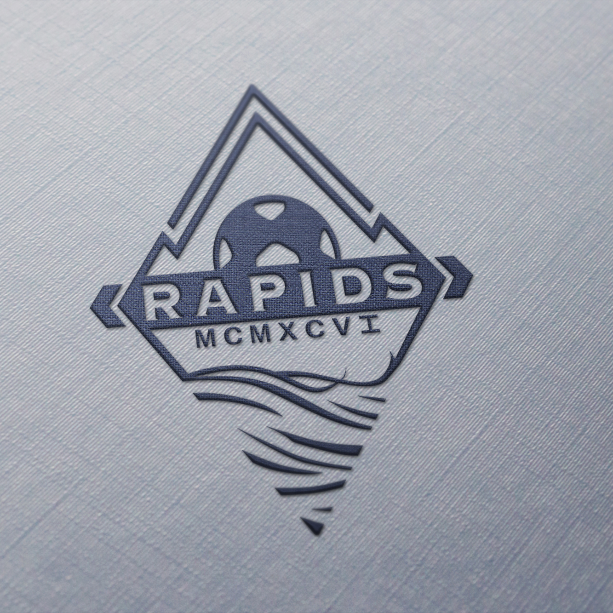
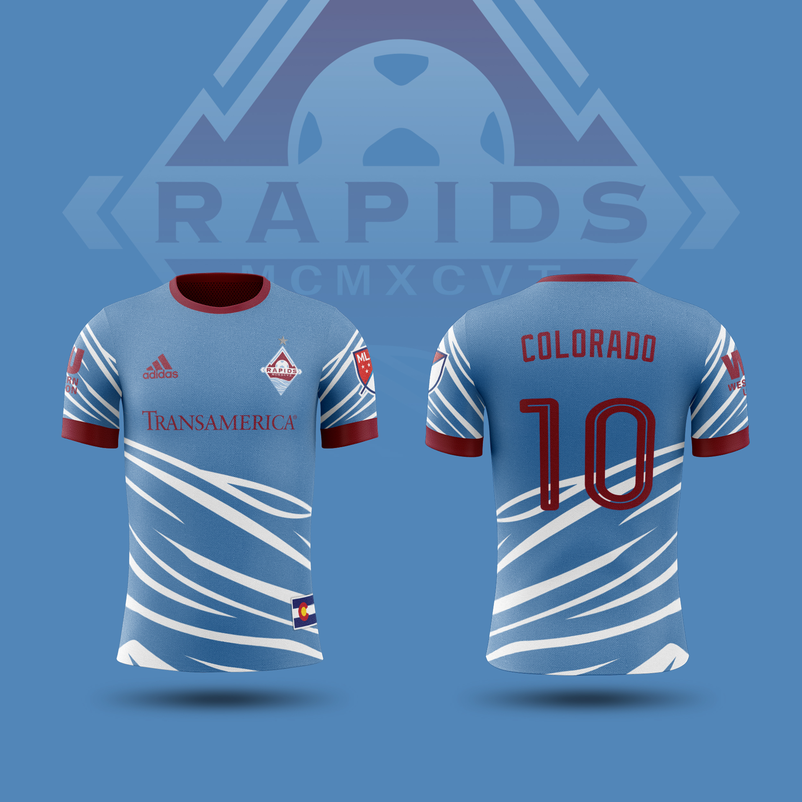
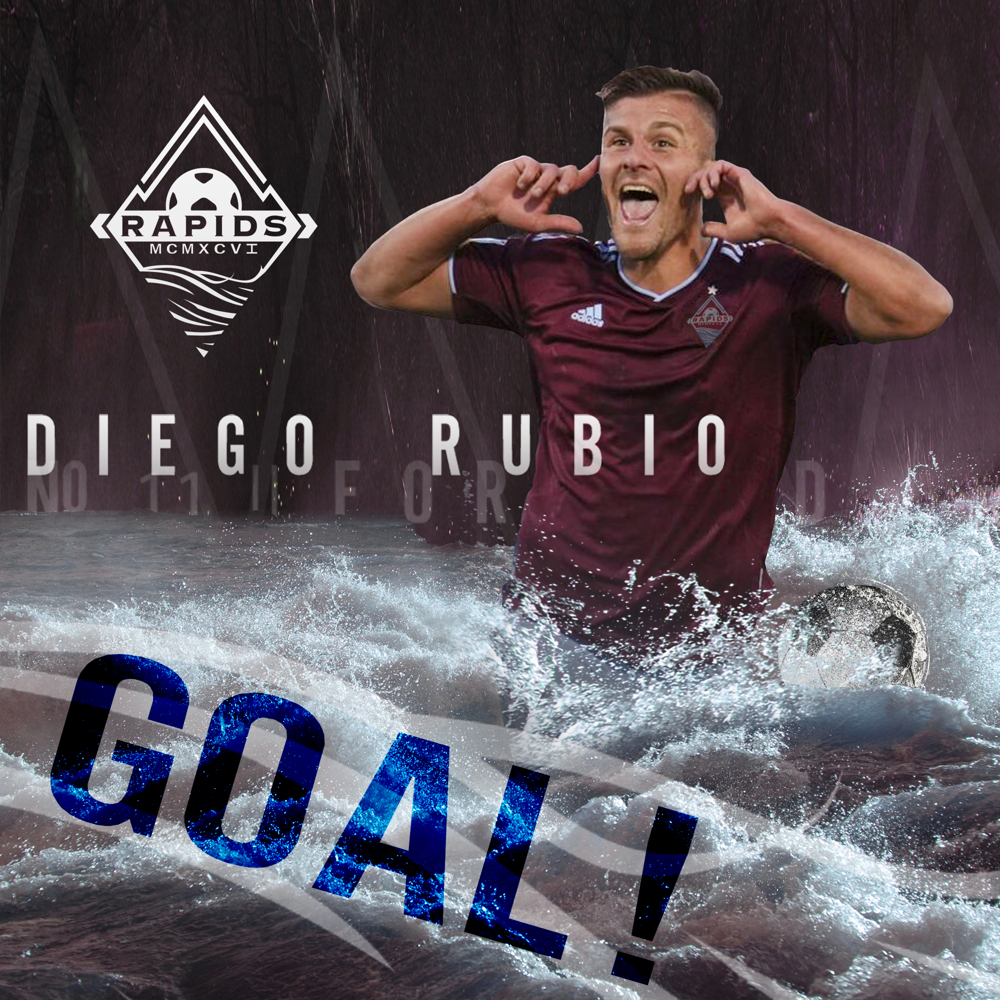
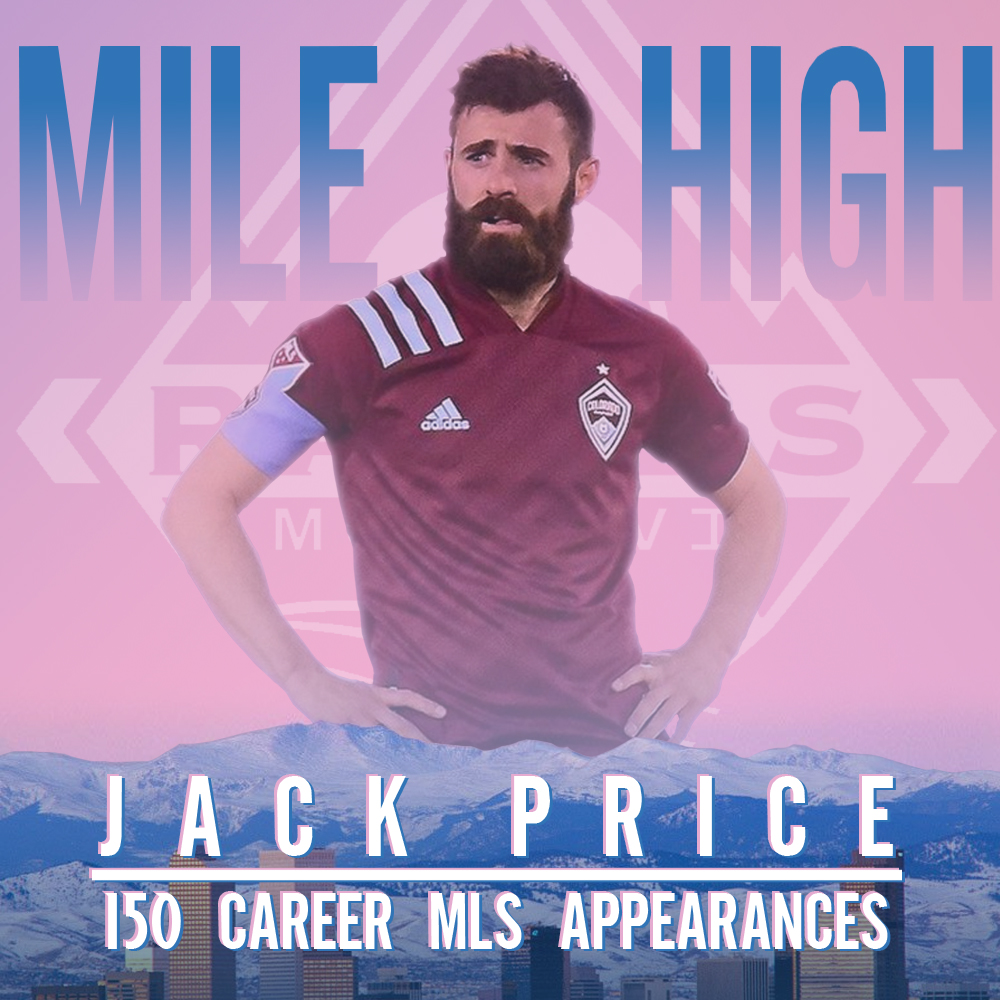

New Logo for the Colorado Rapids.
The Burgundy color is brought over from the old logo but the blue is darkened, with the two grays dropped entirely.
Going for a new "Outside-the-box" look on the traditional MLS badges/shields.

The details of the rebranding.
When placed on a blue field, the border would be removed and appear more "open-ended".

An example of the open-endedness of the logo, but on a metal field.

New jerseys for the club, utilizing the swooping waters on the bottom of the logo onto the hem of the jersey.
A goo way to be unique and stand out.

Graphic for when a player scores a goal.
A focus on the raging rapids woul take center, as they've been mostly ignored in previous iterations despite being the namesake of the team.

Celebratory Graphic showcasing a milestone.
Showcasing the city of Denver with the mountains in the background and the player behind them, with relevant stats in front.
